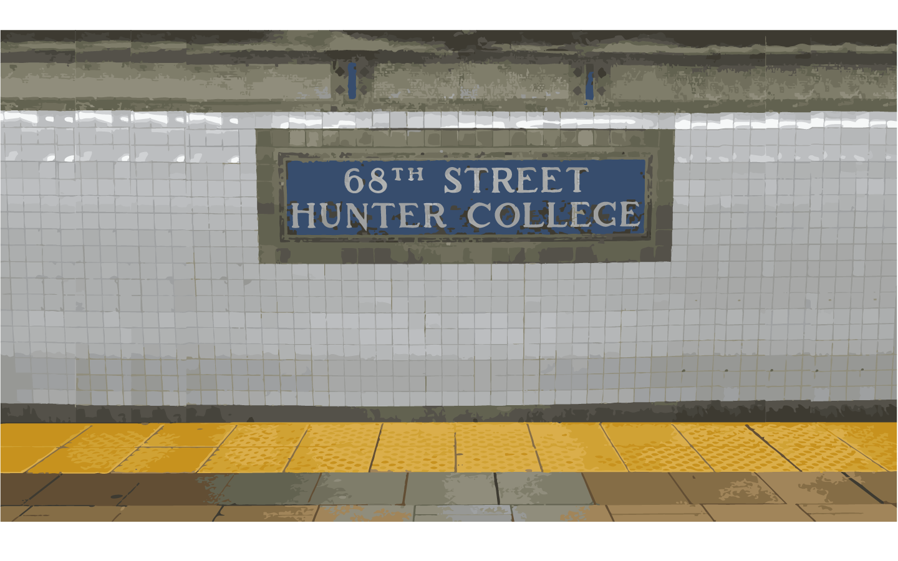
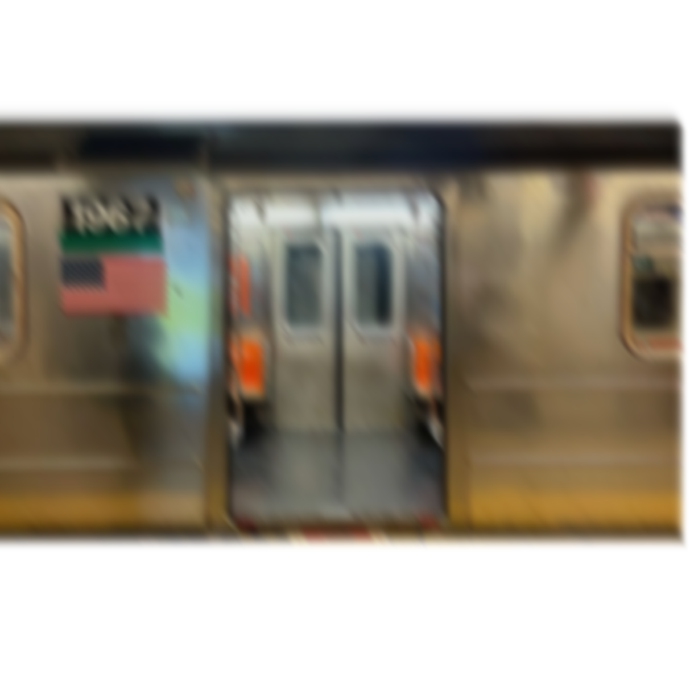
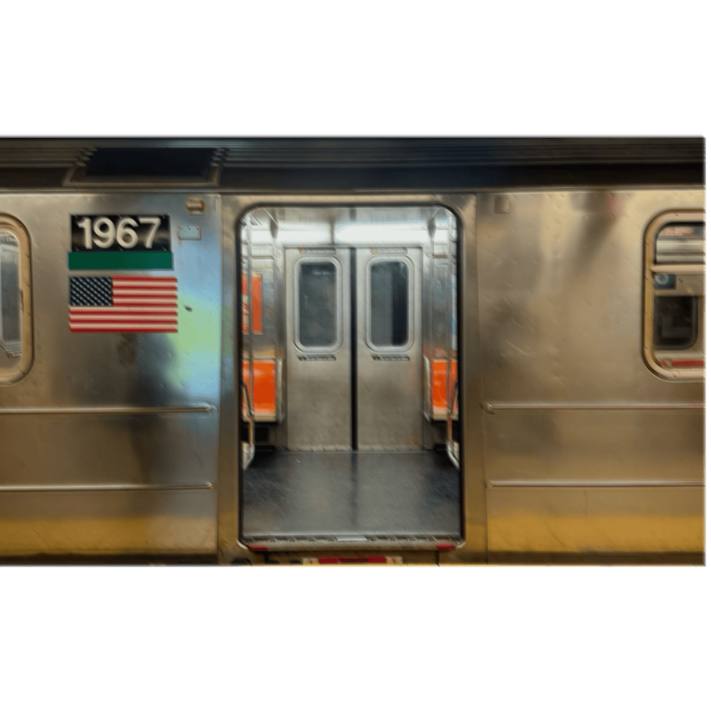
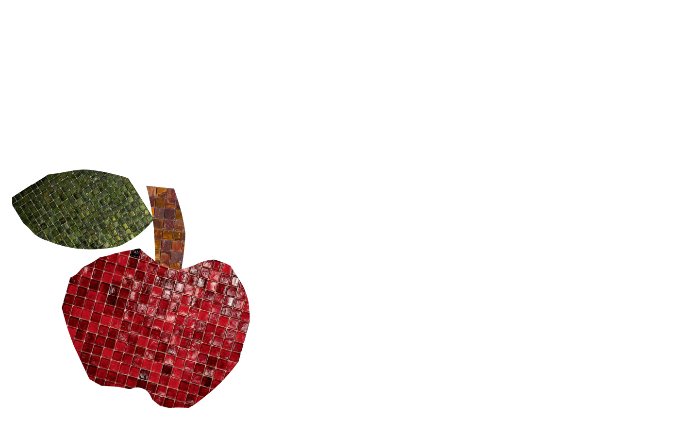

This animation is called transformation. I used two images, one blurred (motion) and one semi blurred. I wanted to include tiles found in the station and decided moving trains as an idea for making my transform animation. The images are switching between the two train images back and forth, creating an illusion of fast movement. The image below is an apple made out of glass cube tiles that I made in illustrator and the text colors are green because I felt like it would highlight the leaf.